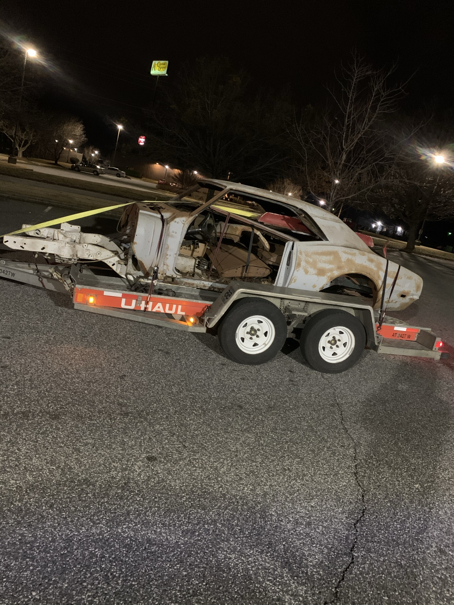
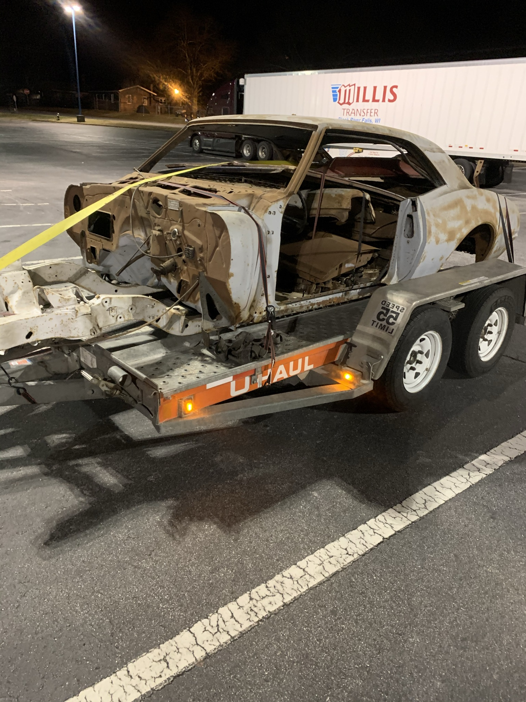
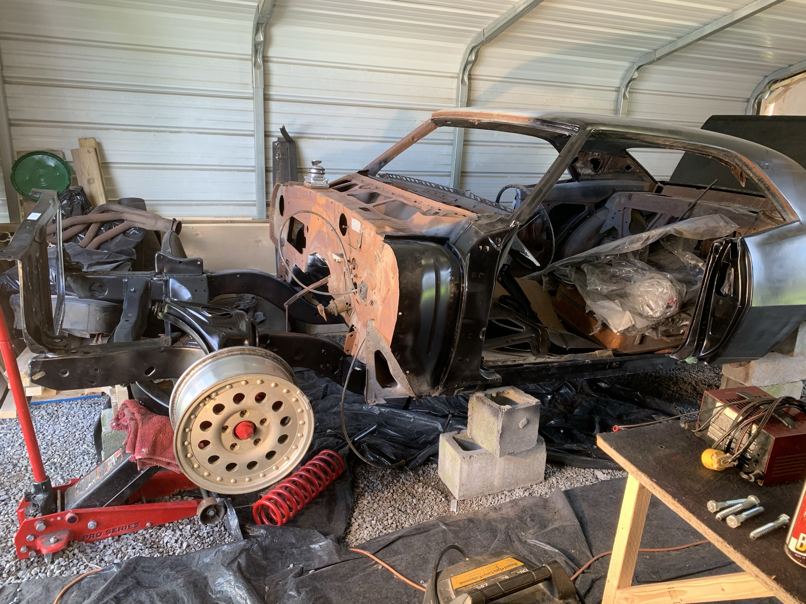
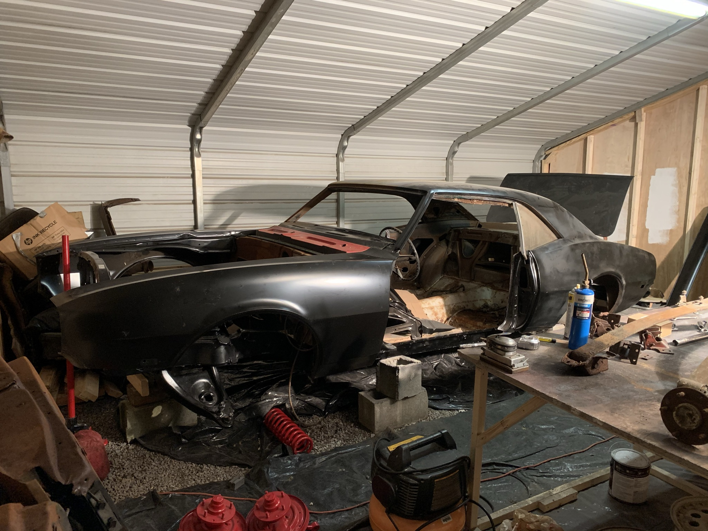
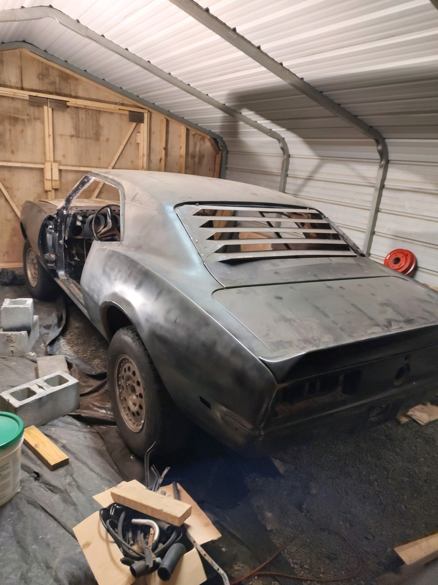
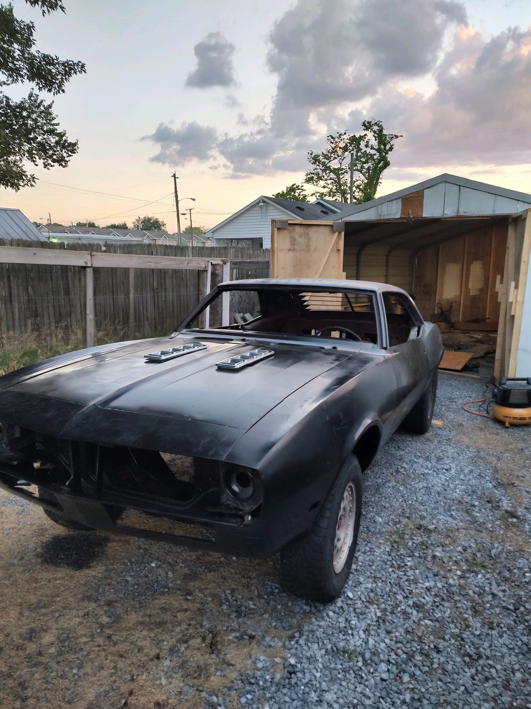

Automotive Project
1968 Chevrolet Camaro

Project Overview
This is a long-term father-son project that started from a bare chassis. We will have worked through nearly every system on the car, from the subframe and drivetrain to the body and paint, completing the work ourselves in our small garage. The goal has been to completely rebuild the Camaro from the ground up while learning and handling as much of the work ourselves as possible. The restoration has included mechanical systems, suspension, fabrication, bodywork, electrical work, and paint.
Day 1 - Madness
The day we bought her, it was a sunny 75° day. We traded a 2001 Mustang GT for her, plus some cash. We loaded up a huge Econoline van with parts from the garage where the Camaro had been hanging from the rafters by ratchet straps. The van was packed, and we were heading back to TN from NC.
Well, if anyone knows Sam's Gap in February, conditions can change... FAST. As we ascended, the temperature dropped and it started snowing. I was hauling my first trailer, in a U-Haul van I didn't know, up a mountain, in the SNOW!!!
Spoiler: we made it home. The van did well for the conditions, and the car made it home unscathed.


Progress
This stage was mostly about getting the Camaro back into one piece. We started fitting body panels, installing suspension parts, rebuilding the subframe, and slowly turning the bare shell into something that looked like a car again. There was a lot of trial and error, measuring, fitting, taking things back apart, and doing it again until everything sat just where it was supposed to.




Work Completed
- Reassembled the car from the bare chassis
- Installed the front suspension and subframe
- Installed and fitted body panels, trim, and exterior components
- Completed body preparation and paint work
- Installed the engine
- Installed the Muncie 4-speed transmission
- Installed the rear end and driveshaft
- Reupholstered the seats
- Installed sound deadening throughout the interior
What's Next
- Finishing the electrical system and wiring
- Install the windows and remaining glass
- Install carpet and finish the interior
- Complete remaining trim and finishing work